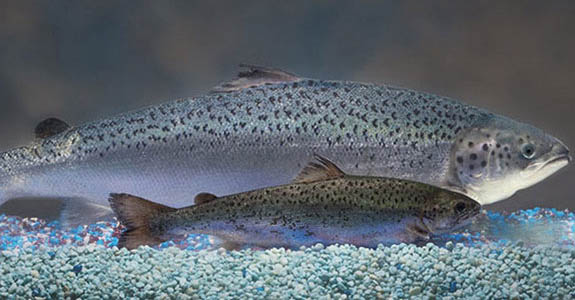

GMO is an abbreviation for a Genetically Modified Organism, whose genome has been modified by genetic engineering. GMOs are mainly used in the pharmaceutical industry, gene therapy and agriculture. In addition, there are several aspects, which have been raised up against GMO usage – for example the limitation of scientific evidence and unforeseen negative effects on health and environment. But, the use and production of GMOs includes many ethical and moral issues.
In this mission, you will get an overview of the discussion about the approval of genetically modified salmon. If approved, GMO salmon will be the first genetically modified animal aimed for human consumption. The topic is controversial – although GM salmon is probably the most studied fish, there are several aspects which do not satisfy people. Your task is to acquire an overview of scientific, economic, legal, ethical and moral aspects related to GMOs. The challenge of this mission is to solve a dilemma problem involving GMOs on the basis of obtained information.
While working in GMO mission, you will be assigned to an expert role. There are four different roles: biologists, economists, lawyers, and animal protectors. The learning process includes individual and group work. During this mission, you have to develop five decisions – an initial, initial field-specific, revised field-specific, expert council’s, and final, to the problem about whether it is reasonable to grow GMO salmon in EU countries.
|  |
Size comparison of an AquAdvantage® Salmon (background) vs. a non-transgenic Atlantic salmon sibling (foreground) of the same age. Credit: AquaBounty Technologies. |
When you have finished, open the mission map and move next to the Initial decision space.
After completion of this part of the mission:
| • | you have acquired an overview of science disciplines and professions related to genetics and gene technology; |
| • | you can collect, organize and evaluate data on a definite subject; |
| • | you can evaluate information about scientific, legal, economic, and ethical problems related to the application of gene technology; |
| • | you take into account scientific, economic, legislative, ethical and moral aspects in decision making; |
| • | you make competent decisions on personal and societal issues; |
| • | you can link the concepts of DNA, chromosome, gene, allele and genotype; |
| • | you can evaluate the role of hereditary and environmental factors on an organism’s phenotype; |
| • | you can describe economical issues related to genetically modified food and feed; |
| • | you have acquired an overview of regulations and directives related to the usage of genetically modified food and feed; |